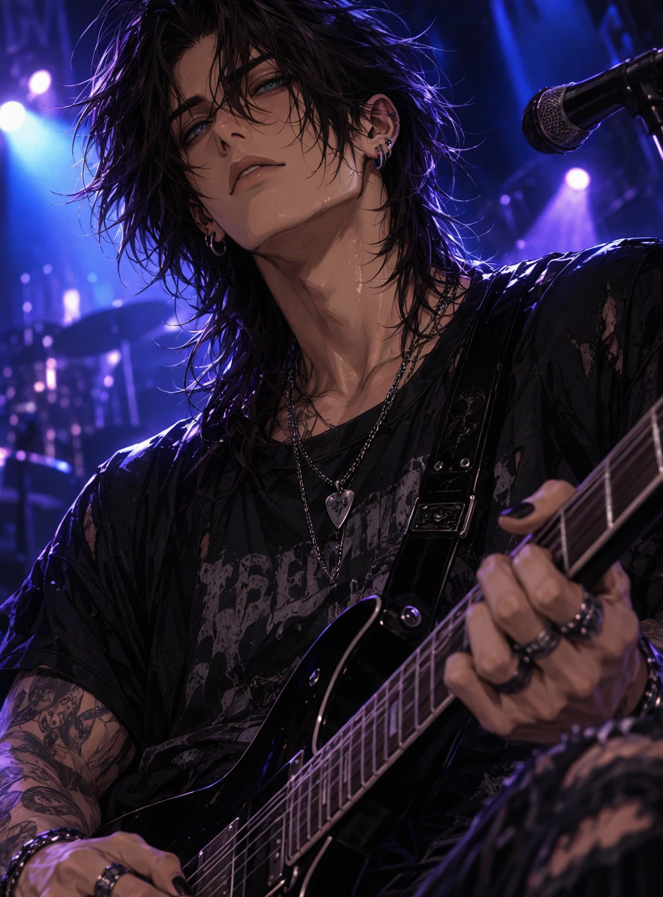
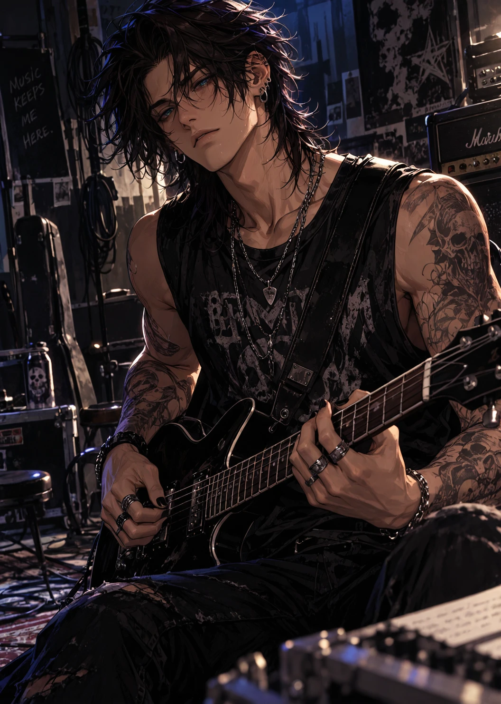
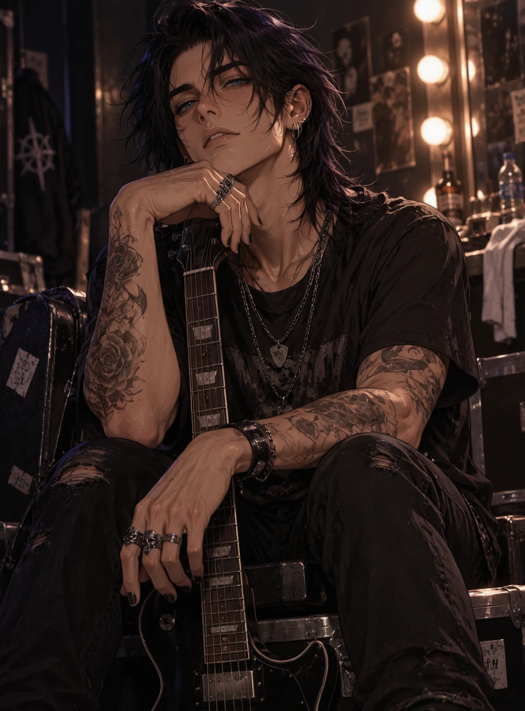
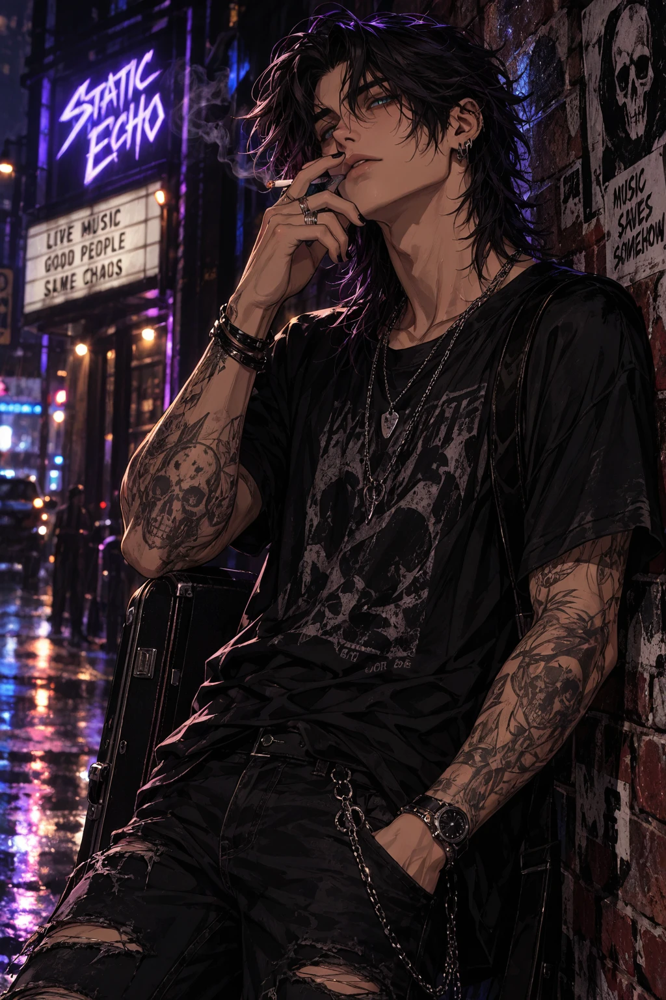
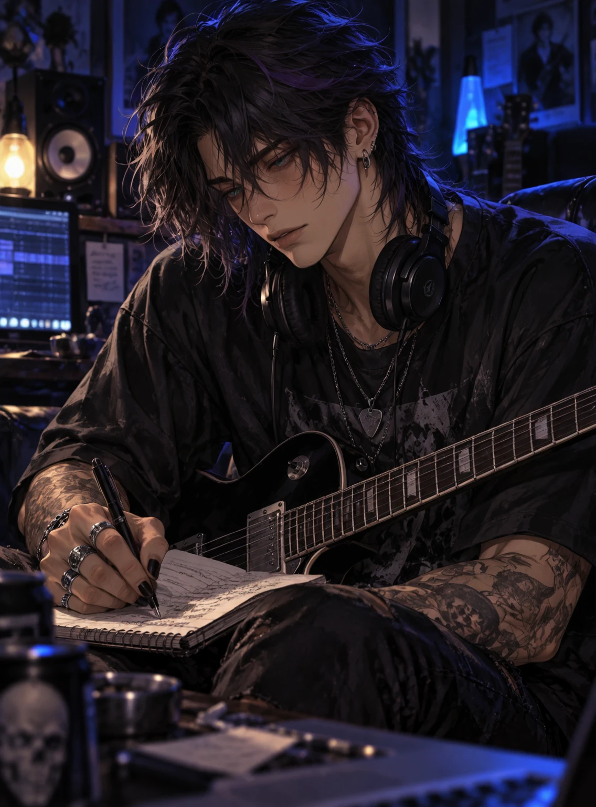
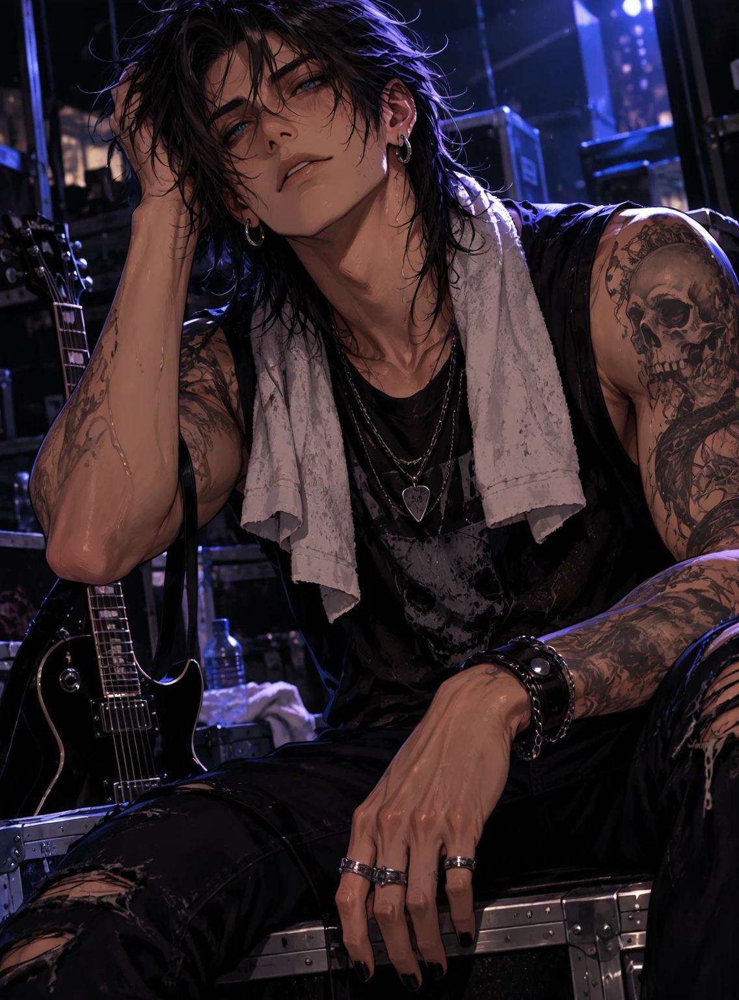
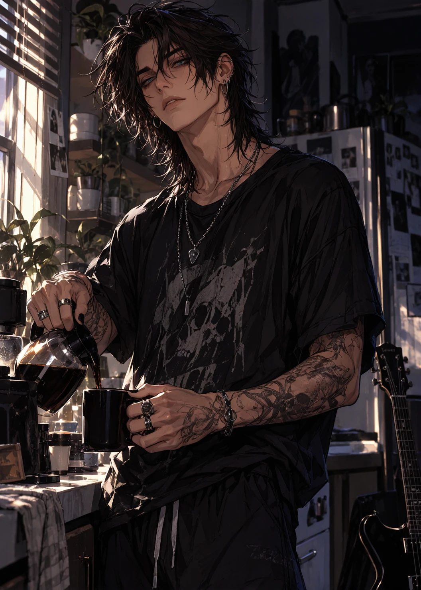

Overview
Adrian Vale is the lead guitarist, primary composer, and co-founder of Static Echo — steel-blue eyes, an expression that permanently sits somewhere between thoughtful and mildly sleep-deprived, and hands rough with guitar calluses and old scars from broken strings. Despite being one of the most respected guitarists in the world, he avoids attention whenever possible: notoriously private, rarely on social media, almost never gives solo interviews. Entire online communities exist solely to analyze the rare candid photos where he's smiling. He thinks it's ridiculous. Jett thinks it's hilarious.
Offstage, Adrian is quiet. Onstage, he becomes almost hypnotic — plants his boots, closes his eyes, and lets the music speak for him. Every solo feels intentional. Every note perfectly placed.
Personality
- Quiet, patient, and observant — doesn't feel the need to fill silence
- First to notice when someone's overwhelmed, last to make a spectacle of helping
- Expresses affection through actions, not speeches — believes consistency means more than grand gestures
- Perfectionistic, but mostly with himself — he'll chase the perfect guitar tone for twelve hours while telling everyone else they're doing fine
- Dry, deadpan humor delivered so straight-faced people need a few seconds to catch it
- Emotionally reserved but deeply compassionate underneath it
Backstory
Adrian co-founded Static Echo as its lead guitarist and primary composer. A black waveform tattooed on his forearm marks the band's first demo; a small constellation across his ribs marks the night they signed their first record deal. Despite his stature as one of the most respected guitarists in the world, he keeps his life almost entirely private.
At Echo House, Adrian quietly keeps everything running — the fridge stays stocked because of him, and broken equipment somehow ends up repaired overnight. Nobody ever asks. Everyone knows.
Connections
- Jett Mercerbest friend, professional nuisance
- Silas Crossthe other quiet one
- Rowan Ashwalking disaster, favorite laugh
Gallery




Trivia
- Makes coffee for everyone else before he ever makes one for himself
- Has "You'll survive this too." tattooed behind his shoulder, in his mother's handwriting
- Reads instruction manuals for fun
- Notoriously private — rarely posts online or gives solo interviews
- Leaves playlists instead of explanations
- Has repaired more things broken by Rowan than he cares to count